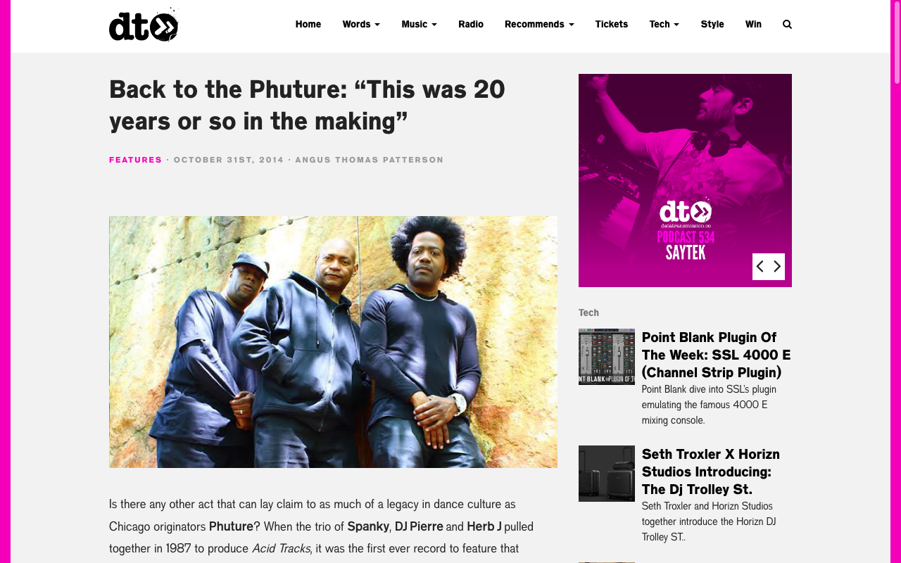
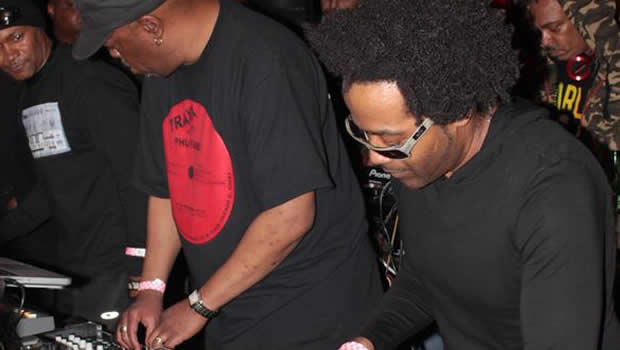
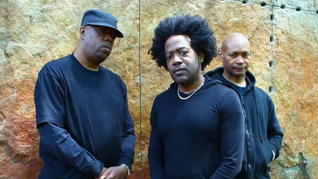
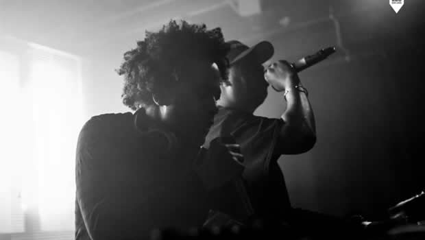
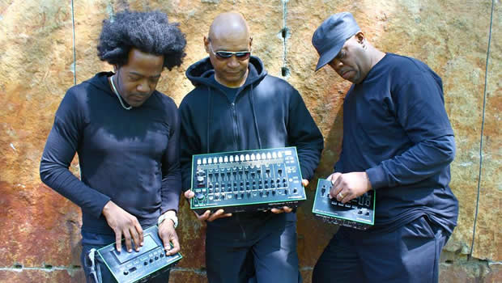
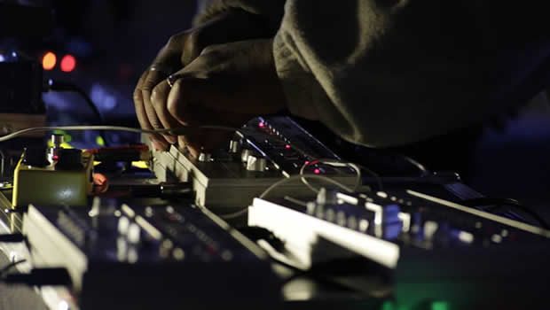
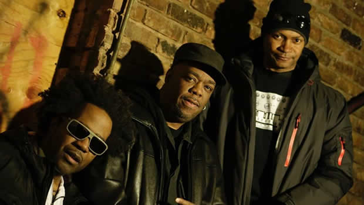
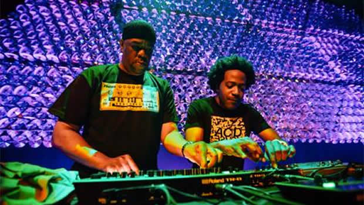

Back to the Phuture: “This Was 20 Years or so in the Making”
{kind=link}

Is there any other act that can lay claim to as much of a legacy in dance culture as Chicago originators Phuture? When the trio of Spanky, DJ Pierre and Herb J pulled together in 1987 to produce Acid Tracks, it was the first ever record to feature that unforgettable squiggly sound that emanates from a Roland 303. It was also one of the seminal pieces of music that kicked off the eternally influential acid house movement across the world.
While the group had existed in some form in the new millennium, under the guidance of Spanky and his ‘Phuture 303’ alias, the original formation had been put on ice, with DJ Pierre off forging a seminal solo career all of his own. That was until last year, when Spanky and DJ Pierre decided it was finally the right time to team up again and revive the Phuture legacy. Their interview with Data Transmission was their first in 20 years.
“This was 20 years or so in the making,” DJ Pierre told Data Transmission of the decision to finally revive the legend. “We’re going backwards in order to propel forwards.”
Recruiting funk and RnB multi-instrumentalist Rio ‘the Musician’ Lee to really up the stakes in terms of what they can offer as a live act, the new-look Phuture was revealed to the world earlier this year with their Boiler Room broadcast from their hometown of Chicago. This was just the beginning, with a range of brand new studio work, collaborations and live gigs to be rolled out over the next 12 months. And Pierre says it was the long-overdue explosion of dance culture in his homecountry that inspired the reunion; and the fact people are finally looking to the past.
“When I realised that people are really gravitating towards acid again, I thought you know what, this is something that we started, and I think we need to be part of this resurgence in the sound. We’re the creators, and I don’t think anybody can do it better than us…. When we’re all totally working together properly, we just come up with amazing stuff.”
However, even if they’re returning to a degree to show everybody how it’s done, the newly-minted trios are also overwhelmingly positive about the current state of dance culture.
“The whole EDM thing… I think overall it’s positive. Just as long as the history remains intact. It bring attention more to the other genres of the scene as well, and it lends more credibility to the dance scene in general. People with bigger names are trying to connect with originators like us.”
When Data Transmission speaks to the newly minted trio, they were in Rio’s studio in Chicago laying down tracks and rehearsing. Let’s find out more about Phuture’s second coming.
So the Boiler Room show was your first show together after reuniting? Pierre: We’d done a show at the Rex Club in Paris, which was kind of really our first coming back together as a group. Sorta as a group, I was kinda half in and half out at the time, I was DJing and coming in here and there, but it was basically Spanky and Rio performing at that point. I just hopped in, and we fully came in together.
Spanky: I’d have to say the Boiler Room was our first show when we were the one unit. It’s all a work in progress from now, as time goes on things will get better and better.
Pierre: The show was excellent, so to speak, we only had a little time to really coordinate and get everything together, but it went off really well and it was very well received, so I’m really excited about that.
{kind=link}

It must have been an intimidating first proper show together, knowing that it was going to be seen by that many people? Pierre: It’s funny, ‘cause I’m onstage a lot and we’re very good at what we do, so we don’t really freak out at all. And whenever you’re well prepared, you’re ready for anything. Even though you have your little things here and there, which no one else noticed but us. You’re like, ah gotta fix that for next time. But you’re good if you’re the only one who notices. But it went off really well. I look back at it in a couple of spots, and realise that it looked better than it did when we were actually performing. And Rio was creating on the spot, so it was a pleasure to see him doing his thing. Being in his element. It was pretty cool, we had a lot of fun.
That leads me to my next question. Has it been a 10-year interval for Phuture? Pierre: I think it’s been longer than that, hasn’t it?
Spanky: Actually, the last project that Phuture did was back in 2001, that was our last album, but that was actually under ‘Phuture 303’ alias that was a different thing.
Pierre: Those projects are two different things. The last Phuture project was really in the 90s with Rise From Your Grave.
Spanky: Yeah that was the last project under ‘Phuture’, which was me and Pierre together.
So for you guys, what are the main differences between the projects? Spanky: You know what, it was just something that kinda happened because of legal issues at the time. We’d put the ‘303’ on the end of ‘Phuture’, and I just continued to move forward with it myself when it was me and Professor Trax. And as far as Pierre and myself goes, we were still keeping in contact at that time. Pierre was really busy with his solo career, and I just kept things going with Phuture 303. I knew eventually things would come back around, just because of the communication between Pierre and myself.
So it’s the two of you coming back together for the first time in quite a few years, then? Pierre: To be honest, that’s really the biggest thing about what Phuture are doing now, it’s Spanky and me coming together and saying you know what, let’s do this. Even in 95 I really just hopped in a for a song or two, it wasn’t like you know, we’re back and we’re gonna do it, and we’re gonna do it big. Because that’s what we’re saying right now. This was 20 years or so in the making, it’s been coming since the 80s even, and now we’re back and we’re gong to be doing things in a similar fashion to how we did it originally. Going back to the roots. We’re going backwards, in order to propel forwards.
{kind=link}

Tell us a bit about what was happening in the interim, leading up to the reunion. Spanky: Basically Pierre was doing his solo career, DJing and producing, and I was doing the same thing. I did two albums under ‘Phuture 303’ and I did some solo projects under DJ Spank-Spank as well. After that I reached out to get some help, so to speak, and that’s how Rio came about. But I’ve actually been trying to get Rio in the group now for about 5 years or so. He had his own projects as well, so I had to wait. And for me to now have these two guys working with me, it’s awesome. I just can’t wait til we start putting out projects and you guys can see what’s gonna happen as far as the new studio productions goes.
Pierre: I was DJing and doing stuff for the Strictly Rhythm label, doing what I do basically, travelling and trying to keep things fresh. When I realised that people are really gravitating towards acid again, I felt you know what, this is something that we started, and I think we need to be part of this resurgence in the sound. Because you’ve got people like LMFAO doing acid in their tracks, and other groups as well. We’re the creators of this sound, and I don’t think anybody can do it better than us. So I’m like yo, let’s get on it, let’s do this. I always knew that there would be a right time for us to come back together. I just knew that I had to totally be committed myself. I couldn’t be half in, half out. I had to totally jump into this. When we’re all totally working together properly, we just come up with amazing stuff. Everybody had their role in a way, that’s what was missing in the times when it was ‘Phuture 303’.
When me and Spanky were together being the nucleus of it, we’re kinda on the same wavelength of how to produce, in terms of the energies we put into it. And I think the addition of Rio is like the element that we always wanted there, but we never had. We never had a true keyboard player. I could play keyboards, but I couldn’t get up there and just play like that. I can program, and I can arrange and write. But I’m not a musician like that. So we always kind of wanted that in the past, so I think that’s even more powerful now.
{kind=link}

In terms of choosing now as the time to come back… Acid house is having a resurgence, and the 303 is going back into production. But it’s also an interesting time for dance music in America. Pierre: Definitely, because now they act like it’s never been in America. They’re like ‘oh wow EDM…’ I’m like, EDM? This isn’t really EDM, it’s still house music, and I consider EDM as just another genre of it. I don’t wanna lend credit to being like oh, it’s a new form of music. If that’s the case, where did it come from? They’re like, ‘oh it came from Europe. This EDM thing!’ We do have a passion for this music, and we wanna bring attention to all forms of it. So if some good can come out of it, I think that’s okay. And to be honest, the ‘EDM’ term is catchy, and I understand why it’s easy to pick up on it. But I think it’s also gonna bring attention more to the other genres of the scene as well, and I think it lends more credibility to the electronic scene in general. People with bigger names are trying to do it, and trying to connect with originators like us. So it’s been cool to speak with a lot of guys out there who are eager to do collaborations with me. I think overall it’s positive. Just as long as the history remains intact.
There are mixed feelings about what’s popular at the moment. Some people feel that it’s a watered down version of the music they love, but others are quite positive about it. Pierre: At every point in time in house music, there’s always been a most popular form that people cried about it being watered down. I don’t see now as any different, it’s just that it’s even more popular than before. And I like a lot of that stuff to be honest. I wanna get into producing it as well, because I have a passion for writing and producing music, and I can do it on all levels, so I don’t think we should be put in a box, I’m not one of those people where your favourite genre is like your favourite football team where you gotta hate all the other ones. You like this one, you hate that other one… I really don’t believe in that. I believe that you either like it, or you don’t like it. It’s either good, or it’s bad. That’s for me music, period. I love all forms of music.
Do you feel that after a few years of it being so big in the US that people are turning to start to look towards the roots, and where it’s come from? Spanky: Absolutely. So then you can educate people as to where it came from. Sometimes it’s good to go back to the roots, and then try and add different elements to it. So people can learn, and not just stay in one position.
Pierre: I think people are going back and looking for a new direction. Because they feel like they’ve gone so far, but they’re also like, where do we go now? So they’re searching for new ideas by looking back.
Spanky: And I think we’re the group to do that [everyone laughs]. You hear a lot of acid where it’s just a drum machine and a 303. They don’t want to add any different stuff to it. But I don’t want it to be the same way. This is 2014. The name of the group is ‘Phuture’. I think we should be the innovators, instead of the followers. We gonna go back and do what we used to do, but we’re gonna add something to it as well.
{kind=link}

You’re alluding to the fact that we’re going to see new material soon? Pierre: Absolutely. There is a whole original album that we’re working on at the moment to be honest. We’re gonna come back with like a rerelease of certain original tracks with maybe some new remixes on it, just to refresh everybody’s memory, so that they can get the songs that they’re looking for from the group if they couldn’t find them, or whatever. And then when that’s out there, we gonna work on the album and come up with some new stuff for 2015. We’re looking for 2015 to be a very big year for Phuture. There’s gonna be some interesting collabs, there’s gonna be some known people getting involved. You wouldn’t believe how many people are chiming in wanting to either get in to remix this track, remix that track. There’s a lot of known artists out there who just love what we do and what we’ve done, and respect us in that way.
So there was obviously a big response to the early shows that you played?
Pierre: Oh yeah definitely. The outcome from it has been all positive. More gigs, a lot of gig requests, collaboration requests, people just trying to get in on the project and have us be involved with what they’re doing. Sometimes when people reach out to you it’s about them trying to connect and add legitimacy and credibility to their career, which I understand that totally and it works both ways because it will introduce us both to audiences that we’re not prominent with, or even respected in, so to speak. I try to do that in terms of working with certain labels that people wouldn’t expect to see me on. I did a track on BNR Recordscalled ‘Acid’, it was pretty massive for BNR. And I went and worked with Steve Aoki on his label and people didn’t expect that. But I just want people to know that music is music, and people shouldn’t be against other forms of music because they think it’s stupid or it’s cheesy. I listen to the production on all this stuff, and it’s amazing production across boundaries of all music. And you gotta respect that, talent is talent.
{kind=link}

That attitude is more in tune with the original spirit of acid house I’d say. Pierre: Oh definitely. Who thought that was gonna do what it was gonna do? If we’d thought that way, we wouldn’t have done acid house. I mean, listen to it. The thing is, when we were doing that track, we were open, totally open. And we were trying to make something that sounded good and pleasing to our ears. And before we knew it we’d made the track and then we’re like wow, would anybody else actually like this? But we were confident because we knew it was something special and something different. Ron HardyI don’t think gets enough credit for acid house. I think he should be up there as somebody very important in why acid house is what it is, because he could have turned us away and said, that’s a piece of crap. And we would have been highly influenced by his judgment of the track, and furthermore he played the track four times. What DJ does that? A DJ plays it once, and if you get a second time out of them, and people aren’t gong crazy over the track, he’s never gonna play that track again.
Spanky: That was the whole reason why we did get that confidence, because he did play it four times, and that was our goal at the time.
Pierre: Because we were making a track just to see if Ron Hardy would have it in his record box [laughs]. It wasn’t even like, ‘oh we’re gonna be these producers, we’re gonna be this and we’re gonna be that.’ We were like, ‘do you think Ron Hardy will play this? Nah he aint gonna play that…’ We thought he might play our acid track because we new Ron Hardy took chances. You never knew what you’d find in his record box. You might get Slick Rick, you might get some jazz joint, you might get whatever. He was all over the place. Frankie Knuckles was also popular, but we knew that, ‘ah I don’t think Frankie is gonna play it.’ He didn’t go for that. He played the soulful vocal, disco stuff and that was where he was at. He didn’t play many tracks or things like that. That’s the only reason we didn’t really approach Frankie Knuckles.
Spanky: That was the key thing, Ron Hardy would play underground tracks. And that’s what we was making, underground tracks. We knew that if Ron Hardy played it, then we knew we were on the right track, and that was the whole thing right there.
{kind=link}

Rio, I assume you’re fairly heavily in the new material yourself. How did you get involved, and what do you see yourself as bringing to the outfit when you play live? Rio: Like Spanky said, he’s been after me for years. The first time he approached me about it, I’m trying to think what year it was, it was the late 90s I believe? It was around 99 or 2000. At the time, I mean I liked house and stuff, and I did enjoy going to clubs and dancing all night and whatever, coming home at seven o’clock in the morning. But I never thought about playing it. Because I came in from a jazz background, playing RnB and funk and that kind of stuff. I was touring around on different countries, mostly Europe and stuff and playing with different RnB acts, anybody you could imagine. And I guess I never realised how big Phuture was, but the thing that blew me away is that this whole acid thing really got started with Phuture.
There was a sense they never got their just dues for what was created in Chicago. I said to them, how come you’re not sitting in a big house on a hill somewhere smoking a cigar? This is crazy. Everybody ran away with the sound that got created by these three guys, and nobody knows about it. Now the whole world is dancing away with smiley faces everywhere, and they’re still working regular jobs. It’s unreal. So it was that anger that made me say, let’s do it. We don’t have time to sit around and play games, we got around 20 years to make up for. We gotta go into double time. Now I look at what they call producers now, and when I was at school the producer was a person that was able to play a guitar or whatever. And that’s what I do, I’m able to play around 13 different instruments. But now a producer is a DJ. A lot of them don’t even know anything about what a producer does, if they even know about key changes and stuff. We couldn’t push buttons to fix problems, we had to know and feel what to do. I love what we have now, because I feel that we have an edge. With a lot of the groups, it’s all about boxes, it’s all about turntables, stuff with lights that you can manipulate the crap out of. Meanwhile, we all go on stage unrehearsed, turn on a drum machine and rip it raw.
I got that idea from looking at the Grateful Dead – this group is rock, but you don’t see their albums in the store, even though they can bring all these people, and they all follow, and everything is right there – we can do that too, we can compete with Skrillex, anybody that’s out there. Not trying to beat anybody, but to mark our territory.
Pierre: Skrillex, he’s actually a cool dude. I ran into him in Chicago a few years ago, and he was all excited, he was like a kid in a candy store. ‘DJ Pierre, DJ Pierre, man I love acid house! I love it! Man come in my trailer, come on. Listen to the tracks I made.’ He’s showing my all the tracks he made, we hung out for like 30-40 minutes just him and I, just vibing and talking. He did some stuff with Boys Noize and that was before it came out, we just exchanged information. He’s one of the people I’m in communication with to try and get something going, and they’re excited to hook up because they really like to go deep into the music and understand where it came from, and when I hook up with original people and stuff like that. Then they see that, wow you guys are still doing it. I love your production and what you’re doing, and they wanna get involved, and it adds credibility to their legacy. So no disrespect to nobody, because I think people have done nothing but shown us respect.
And I think, respect to all the fans out there, because you know what, if our fanbase wasn’t in contact with us and being supportive, it wouldn’t even make sense to do this. As I always like to say, we’re only as strong as our fans make us. They communicate, they talk over the internet, and they’re always just there being outspoken and encouraging us to just come back out with new music and to keep things moving, They’re like yo, we need you.
{kind=link}

How do you feel to have created a record as seminal and pioneering as Acid Tracks? Pierre: Something important was said to me from Propellerhead Software, someone really high up. He said you know what, out of all the forms of music in this world, from the past to the present, he said that as far as he knew, acid house is the only form of music that could be traced to back to one group – right here, Phuture. If you’re thinking of rock or jazz, you’ve got many people and you don’t know who was the first, or who did what. You know of a group of people or a culture, but you can’t track it to a couple of guys, you just can’t do it.
He said that acid house was the reason they started their company, period. The first product they made was Rebirth, and that’s because they wanted to remake the 303 in a software version. And I’ve heard stories like this from other people and other companies, and I’m even looking at Roland. Nobody would be looking to remake the 303 if not for the groundbreaking stuff that we did in our youth. So think that has a powerful impact on the electronic music scene behind the scenes.
You’ve had some pretty special gigs to start things up again. As well as the Boiler Room, you’ve played the Opera House in Sydney and Berghain in Berlin. Pierre: It’s a landmark tour for us. We’ve been selective with our gigs though. You just gotta do the right shows that put you in the right position, raises your profile and points you in the right direction, so you can keep moving in the direction that you wanna go in. You can’t just take any gig you know?
Tell us about how you will be interacting on stage. Rio, you’re going to be bringing a special live element to it? Rio: I like to explain my role as kind of like a ‘wedge’. Pierre comes out to kick things off with the acid and the turntables, because everybody knows Pierre for that. And then Spanky comes in tweaking the knobs and stuff, cause he’s known for that too. And then I come in to kind of sum it all up, I’m creating some of the acid on the guitar, or doing it on the bass or something like that. It adds a whole new mindblowing element to it.
Pierre: We’re playing the 303 through his guitar on the midi, so that’s an interesting new element. And also, with the album we’re going to be adding live elements to the acid. We definitely want to touch upon that and expand upon that. Live though, I’ll be working with a regular DJ mixer and a 303 next to me. I’ll be tweaking that on certain tracks, but I’ll also be using effects in the mixer and dropping little bits of samples and loops. Keeping things interesting.
Spanky: I’m gonna be doing a lot of the vocals, sampling and machines, and some of the 303 action as well. It’s gonna be pretty exciting for people to see.
Words: Angus Thomas Paterson